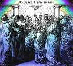

Abagoberezi ba Yesu Babunyisa Amawulire Amalungi

The Gift of the Holy Spirit
mu nnaku 40 Yesu ze yalabikira abayigirizwa be oluvannyuma lw’okuzuukira kwe, yali abagambye obutava mu Yerusaalemi okutuusa nga bamaze okufuna ekirabo eky’omwoyo omutukuvu ogwa- basuubizibwa. ( Yokaana 14:16 ) mu ssuula eyookubiri ey’Ekitabo ky’Ebikolwa by’Abatume, tusoma emboozi y’abagoberezi ba Yesu abaali bakola ekyo kyennyini. bonna baali bakuŋŋaanye wamu amangu ago ne bafuna okuwuuma okw’amaanyi ng’empewo ey’amaanyi ng’efuuwa mu nnyumba yonna gye baali basula. bo bwe batyo ekyalabika nga Ennimi z’omuliro ku buli muntu mu kiseera ekyo bonna baali bajjula Omwoyo Omutukuvu ng’ayogera mu nnimi endala (ebikolwa 2:4) kyatuuka bwe kityo nti abagobere- zi ba Yesu bwe baajjula emyoyo emitukuvu.
Waaliwo enkumi n’en- kumi z’abantu abaali bavudde mu nsi oba okwetooloola Isirayiri abaali bazze e Yerusaalemi okujaguza olumu ku mbaga z’Abayudaaya.
oyinza okusoma olukalala lw'ensi eno mu ( Ebikolwa 2:8-11) mu ngeri ey'ekyamagero buli omu ku bagenyi bano yasobola okuwulira Yesu ng'atugoberera ng'anyumya amawulire amalungi ag'Obulokozi okuyita mu Yesu Kristo ng'ayogera mu lulimi lwabwe
Omuyigirizwa, Peetero, yawa okwogera okukwata ku mutima naddala ku ngeri Yesu, Oyo eyakomererwa olw’obutali bubi, gy’ali Omwana wa Katonda. Yategeeza ekibiina nti obulokozi buyita mu Yesu. N’olwekyo bangi mu kibiina ekyo kyakwatibwako nnyo olw’ebyo Peetero bye yayogera ne kiba nti abantu abasukka mu 3,000 baakkiriza Yesu nga Masiya era ng’omulokozi waabwe ku lunaku olwo!

Olunaku luno ddala lwe lwatandika ekkanisa y’abakkiriza mu Yesu; lowooza ku bakkiriza abo bonna abapya abagenda ewaabwe mu nsi zaabwe enzaalwa ne babuulira mikwano gyabwe gyonna n’ab’omu maka gaabwe ku bulokozi okuyita mu Yesu! Omuwendo gw'abantu abaali bagoberera "Ekkubo," nga Ekkanisa bwe yasooka okuyitibwa, gwatandika okukula mangu wonna mu kitundu kati ekimanyiddwa nga Middle East ne Mediterranean Europe. Ekitabo ky’Ebikolwa by’Abatume y’emboozi y’engeri abagoberezi ba Yesu gye baabunyisa amawulire amalungi ag’obulokozi.

okukyuka n’okuyigganyizibwa
Jjukira nti mu Yerusaalemi abayigirizwa bo mwe baajjula omwoyo omutu- kuvu, era Yerusaalemi kye kifo kyennyini okubuulira abantu ebikwata ku Yesu we kyasinga okunyiiga-oluvannyuma lwa bino byonna Yesu gye yali aggyiddwaako. Okuyigganyizibwa okuva mu bakulembeze b’Abayudaaya abaali basse Yesu kati kwali kwesigamye ku bibinja by’abagoberezi ba Yesu ebipya era ebigenda byeyongera.
Steven A Most outspoken preacher, ye yasooka okugoberera ekkubo ery'okubeera.
zisinga kukyuka mu ngeri ey’ekitalo
ng’oggyeeko kayfa ne kabona omulala eyakubiriza Omusango gwa Yesu ogw’okusekerera, waaliwo Omuyudaaya omulala omunyiikivu era alabika yagufuula omulimu gwe ogw’obulamu bwe okusaanyaawo abagoberezi ba Yesu bonna. Erinnya ly’omusajja oyo yali soul of tarsus.

Sawulo yasaba era n’afuna olukusa okuva eri kabona wa yeekaalu mu Yerusaalemi okuzinga n’okusiba Abayudaaya bonna be yali asobola okusanga nga baali Bakkiriza mu kkubo.
Mu butuufu Sawulo yali agenda mu kibuga kino ekya Ddamasiko okunoonya mu kkuŋŋaaniro eyo okuzuula Abakkiriza mu Yesu, ekitangaala ekimasamasa okuva mu ggulu ne kimuyaka okumwetooloola. Yagwa wansi n'afuna eddoboozi okumubuuza nti, "kale lwaki onjigganya? (ebikolwa 9:1-19)
"gwe ani?" saul aske. Yesu yennyini ye yali ayogera n’omwoyo. Katonda yali alonze sawulo okutuusa amawulire amalungi aga Yesu Kristo eri abagezigezi (omuntu yenna atali Muyudaaya) buli wamu
Omukristaayo omuyudaaya bwe yawulira nti saul afuuse omukkiriza mu kkubo, tebaasobola kukkiriza! ku ye okukyuka okuva ku omu ku bayigganya baabwe abasinga obubi okudda ku omu ku babuulizi abasinga okwogera obulungi kyali kya kitalo nnyo. kyali kiwanvu nnyo nga bangi ku Bayudaaya Abakkiriza tebanna- ba kwesiga nti ddala emmeeme yali ekyusiddwa. Baamutya olw'ebyo byonna bye yakolanga emabega.
sawulo bwe yatandika obuweereza bwe obw’okubuulira mu mawanga, yatandika okukozesa erinnya lye ery’Oluruumi: Pawulo (Sawulo ye yali erinnya lye ery’Ekiyudaaya.)
Pawulo yatambula mayiro enkumi n’enkumi ng’abunyisa enjiri ya Yesu. osob- ola okusoma ku ntambula ze mu kitabo ky’Ebikolwa (ebikolwa 11:25, ebikol- wa 28). Ye kennyini yayigganyizibwa nnyo olw’okubuulira kwe n’okuyigiriza ku Yesu. yakwatibwa era n’asibwa mu kkomera e Rooma. okuva lwe yasibib- wa eyo that are nti pul yawandiika ebbaluwa nnyingi eri amakanisa g’ekkani- sa agasaasaanidde mu Bulaaya ezikung’aanyizibwa mu ndagaano empya. Ol- w’okukyuka kwa Pawulo tulina